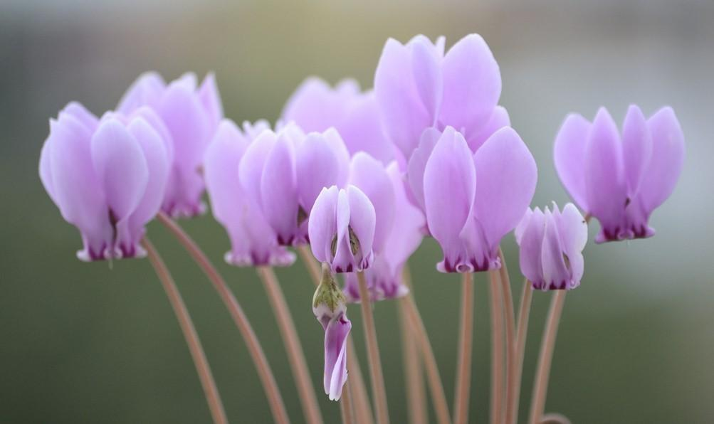

首页>养花知识>养花知识详细页面
这3种花太好养了，扔进盆里就爆盆了！
来自:养花知识主题站
对于众多养花爱好者来说，想必爆盆算得上是公认的让人成就感满满的盛事之一了吧 ，下面小编就为大家介绍这么几种类型的花卉，不仅好养而且还极容易爆盆，基本上 把它们扔到花盆里，过不了多久它们自己就默默爆盆了，简直是花友们的福音啊！
蓝雪花
这种花卉可能并不为人所熟知，但它的颜值却是不容忽视的，给人以清新冷冽的感觉。花朵的颜色为美丽的浅蓝色，尤其是爆盆的时候，满眼望去尽是美丽的风景，十分引人注目。 注意要点：
1、这种花卉很是容易爆盆，对水分的要求不高，但必须保证足够的光照；
2、临近花期之时可以对植物进行适当修剪，能够起到促进其爆盆的作用；
3、注意当气温低于10度的时候及时将蓝雪花搬回室内进行养护。
矮牵牛
这是一种美丽至极的垂吊植物，不仅花色丰富，造型多样，尤其是爆盆的时候，挂在阳台上，分分钟可以美成一幅花卷。 关键的是，这种花卉不仅价格便宜，而且非常容易爆盆，基本上只要做正常养护，花期之时就会花开饱满，异彩纷呈了。 注意要点：
1、将矮牵牛放在阳光下养护，花卉多接受光线照射，就很容易使其爆盆了；
2、花期之前可多加摘心，能够起到促进花蕾孕育的作用；
3、花期之时需要施加以磷肥为主的肥料，频率每周一次即可。
角堇
这也是一种看起来不起眼的花卉，花朵较小，但胜在花色繁多，色彩丰富，尤其是花期时节，花球簇拥在一起，美丽至极。 注意要点：
1、高温时节注意遮阴，其他天气里保证充足的阳光照射，有利于花卉的爆盆；
2、生长期内可每周施肥一次，可以促进其更好地发芽孕蕾。